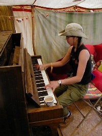
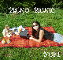

Donec pulvinar ullamcorper metus
 Hi, my name is Yuki (pronounced You-Key). Another barrd re-creation. Pellentesque pede. Donec pulvinar ullamcorper metus. In eu odio at lectus pulvinar mollis. Vestibulum sem magna, elementum ut, vestibulum eu, facilisis quis, arcu. Mauris a dolor. Nulla facilisi. Cum sociis natoque penatibus et magnis dis parturient montes, nascetur ridiculus mus. Sed blandit.
Praesent Scelerisque
Pellentesque pede. Donec pulvinar ullamcorper metus. In eu odio at lectus pulvinar mollis. Vestibulum sem magna, elementum ut, vestibulum eu, facilisis quis, arcu. Mauris a dolor. Nulla facilisi. Cum sociis natoque penatibus et magnis dis parturient montes, nascetur ridiculus mus. Sed blandit. Phasellus pellentesque, ante nec iaculis dapibus, eros justo auctor lectus, a lobortis lorem mauris quis nunc. Praesent pellentesque facilisis elit.
My Album, “Piano Picnic”, is now available
 Pellentesque pede. Donec pulvinar ullamcorper metus. In eu odio at lectus pulvinar mollis. Vestibulum sem magna, elementum ut, vestibulum eu, facilisis quis, arcu. Mauris a dolor. Nulla facilisi. Cum sociis natoque penatibus et magnis dis parturient montes, nascetur ridiculus mus. Sed blandit. Phasellus pellentesque, ante nec iaculis dapibus, eros justo auctor lectus, a lobortis lorem mauris quis nunc. Praesent pellentesque facilisis elit.